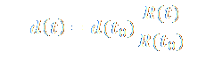

Le modèle de Friedmann-Lemaître est un ensemble de modèles d’univers répondant au principe cosmologique et à la relativité générale. Le principe cosmologique postule qu’à un instant donné, toutes les observables ont même mesure en tout point et dans toutes directions. Autrement dit, l’univers est homogène et isotrope. La relativité générale est une théorie géométrique de la gravitation qui relie l’espace-temps à son contenu. Pour voir l’évolution d’un modèle au cours du temps, nous pouvons tracer l’évolution du facteur d’échelle au cours du temps.
Le facteur d’échelle mesure la façon dont la distance entre deux objets varie au cours du temps. Si d(t0) représente la distance entre deux objets à l’instant t0, alors à l’instant ultérieur t, ils seront séparés de d(t) tel que :

Il peut être déterminé grâce à l’équation différentielle suivante :